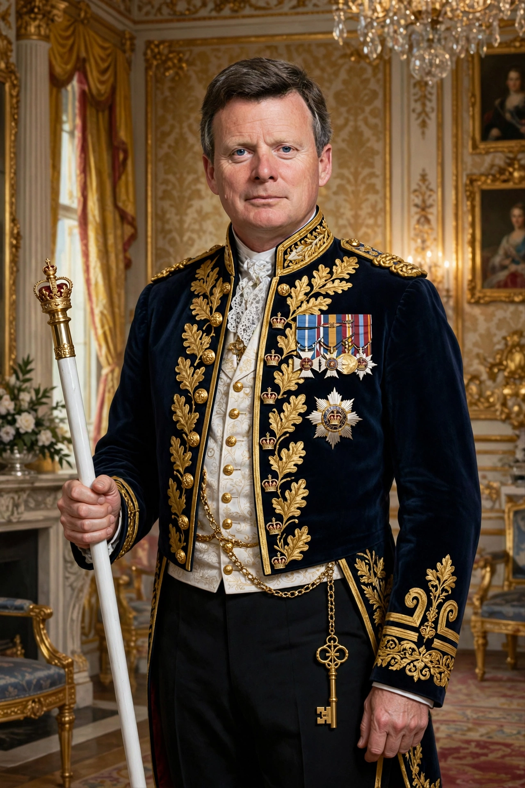

The Lord Chamberlain of the Household is the most senior officer of the Royal Household of the United Kingdom, responsible for its organisation and ceremonial duties including state visits, investitures, garden parties and royal weddings and funerals.

Dating to the Middle Ages, the Lord Chamberlain once wielded major political power and, until 1968, acted as censor licensing plays for public performance under the Theatres Act. That censorship role ended with the Theatres Act 1968.
Today the post is part-time and held by a peer. The Lord Chamberlain breaks his white staff over the sovereign's grave at a state funeral, symbolising the end of service, as happened at the funeral of Elizabeth II in 2022.